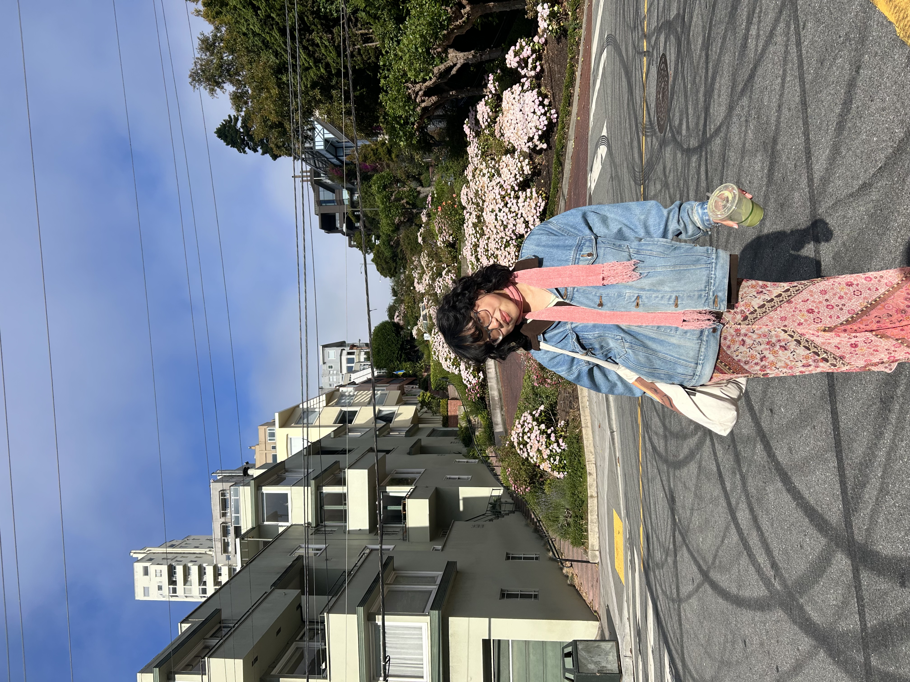

hi, i'm aileen!
I'm a fourth-year student at the University of Washington pursuing a double degree in English and Informatics. My research is interdisciplinary, drawing from science & technology studies, posthumanism and the environmental humanities, and critical race studies. I am particularly interested in how categories of non-whiteness and non-humanness map onto representations of robots and artificial intelligence in literature and popular media, foreclosing possibilities of being for these machines. This work is driven by the question: I'm also a McNair and Beinecke Scholar. My work is forthcoming in Plurality; I have creative work published in Bricolage. Drawing from lineages of cyborg theory, as articulated by Donna Haraway: Can cyborgs still save us if they are immersed, simultaneously and symbiotically, in racist and speciest dialogues If so: how do we make kin with our machines? She is interested in how the categories of non-whiteness and non-humanness map onto robots in the popular imagination, foreclosing possibilities of being for these machines
This site houses my digital cv, and is where you'll find a lot of my thoughts (on academia and political organizing, my creative work, and maybe some essays in progress). Please feel free to connect with me at aileenk@uw.edu if you would like to chat more!